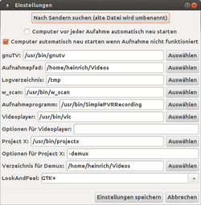
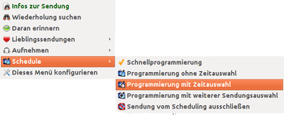
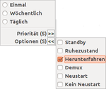
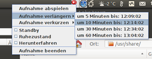
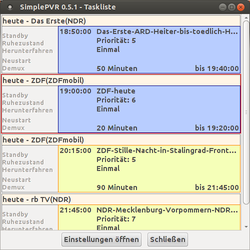
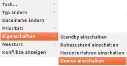

SimplePVR
Dieser Artikel wurde für die folgenden Ubuntu-Versionen getestet:
Ubuntu 16.04 Xenial Xerus
Ubuntu 14.04 Trusty Tahr
SimplePVR  ist ein Plugin für die digitale Programmzeitschrift TV-Browser, mit der eine einfache Aufnahmeprogrammierung direkt aus dem TV-Browser heraus erfolgen kann. Es handelt sich um eine Parallelentwicklung des WinCapTV_GUI-Plugins. Die Aufnahmen werden mit gnuTV oder für Netzwerkstreams mit VLC erstellt, es lassen sich beliebig viele, auch Serienaufnahmen, programmieren. Bei Bedarf kann auch direkt eine channels.conf erstellt werden. SimplePVR verwaltet die Aufnahmedaten, warnt bei Überschneidungen und fährt den Computer auf Wunsch (und je nach technischen Gegebenheiten des Rechners) für die Aufnahme aus dem Standby/Ruhezustand-Status hoch und und danach auch wieder herunter oder stellt ihn ganz aus.
ist ein Plugin für die digitale Programmzeitschrift TV-Browser, mit der eine einfache Aufnahmeprogrammierung direkt aus dem TV-Browser heraus erfolgen kann. Es handelt sich um eine Parallelentwicklung des WinCapTV_GUI-Plugins. Die Aufnahmen werden mit gnuTV oder für Netzwerkstreams mit VLC erstellt, es lassen sich beliebig viele, auch Serienaufnahmen, programmieren. Bei Bedarf kann auch direkt eine channels.conf erstellt werden. SimplePVR verwaltet die Aufnahmedaten, warnt bei Überschneidungen und fährt den Computer auf Wunsch (und je nach technischen Gegebenheiten des Rechners) für die Aufnahme aus dem Standby/Ruhezustand-Status hoch und und danach auch wieder herunter oder stellt ihn ganz aus.
Installation¶
Ein funktionsfähige TV-Browser-Installation mit Java 7 ist Voraussetzung. Benötigt wird im TV-Browser zudem das Plugin "WinCapTV_GUI/SimplePVR Scheduler" in mindestens Version 0.9.6.2. Dazu im TV-Browser "Extras -> Plugins verwalten -> Aktualisiere/Installiere Plugins" aufrufen, und es dort auswählen.
Wie das Hauptprogramm auch ist SimplePVR nicht in den Paketquellen vorhanden, es kann aber über ein versionsunabhängiges deb-Paket  des Entwicklers von sourceforge.net bezogen und installiert[1] werden, benötigte Abhängigkeiten (z.B. gnuTV via dvb-apps, VLC und projectX) werden automatisch mit installiert.
des Entwicklers von sourceforge.net bezogen und installiert[1] werden, benötigte Abhängigkeiten (z.B. gnuTV via dvb-apps, VLC und projectX) werden automatisch mit installiert.
Hinweis!
Fremdpakete können das System gefährden.
Konfiguration¶
 SimplePVR erwartet eine channels.conf und/oder eine channels.m3u in ~/.simplepvr, wenn dort keine dieser gefunden wird, bietet das Programm beim Start die Möglichkeit, entweder ggf. bereits für ein anderes Programm bestehende Konfigurationsdateien auszuwählen und dorthin zu kopieren, oder mit w scan einen Sendersuchlauf durchzuführen, und eine entsprechende Datei anzulegen. Falls das Paket w-scan nicht installiert sein sollte, bietet das Programm an, das nachzuholen. Es kann dann eine channels.conf für diverse Übertragungswege ("Antenne" (also DVB-T), "Kabel", "Sat", "ATSC") und Länder erstellt werden. Eine channels.m3u wird verwendet um Aufnahmen von Netzwerkstreams zu ermöglichen, wie z.B. mit Hilfe des FRITZ!WLAN Repeater DVB-C, der passende M3U-Listen zur Verfügung stellt. Es ist aber theoretisch auch möglich eigene M3U-Listen zu erstellen, mit frei verfügbaren Sendern des Internetanschlusses oder anderer Anbieter. (Voraussetzung dafür ist das Erstellen einer "erweiterten M3U" mit einer Titellänge von jeweils -1 für jeden Sender.)
Die Konfiguration des Programms erfolgt hauptsächlich über "Extras -> SimplePVR-Tasklist -> Einstellungen öffnen", die Standardwerte können dort eingesehen und ggf. angepasst werden.
Über die Schaltfläche "Nach Sendern suchen (alte Datei wird umbenannt)" kann hier ein erneuter Sendersuchlauf mit w_scan ausgeführt werden, z.B. bei Ortswechsel, veränderte Kanalbelegung etc. Außerdem lässt sich das Standardverhalten für das Erstellen neuer Aufnahmen festlegen. Um ganz sicher zu gehen, dass keine andere Anwendung die TV-Karte verwendet, kann man den Computer vor jeder neuen Aufnahme neu starten, oder zumindest dann, wenn die geplante Aufnahme nicht gestartet wird (siehe dazu aber Probleme und Lösungen).
In den Einstellungen lassen sich die Pfade für die Aufnahmespeicherung, Log-Datei, die eingesetzte Software, zum Videoplayer und ProjectX auch zu verwendende Optionen, sowie das "LookandFeel" der Programmoberfläche festlegen. Standardmäßig setzt SimplePVR zur Wiedergabe den GNOME-MPlayer ein; ggf. muss auf andere Player (z.B. VLC) ausgewichen werden, wenn damit keine Bildwiedergabe erfolgt.
Diese Angaben werden in der Datei ~./simplepvr/settings.prop gespeichert, sie können bei Bedarf auch in einem Editor[2] bearbeitet werden. Dort können zudem auch Skripte zur weiteren Vor- und Nachbearbeitung (preScript und postScript) angegeben werden, denen der Speicherort als Parameter übergeben wird.
Nach der Installation muss im TV-Browser-Plugin ggf. noch die Senderzuordnung überprüft werden, die automatisch Erkennung funktioniert nicht in allen Fällen korrekt. Dazu "Extras -> Einstellungen -> Plugins -> SimplePVR Scheduler" aufrufen und dort im Reiter "Sendereinstellungen" die passenden Sendernamen zuordnen (ein Doppel- -Klick in den Einträgen der Spalte "SimplePVR-Sender" öffnet eine Dropdown-Menü mit allen Einträgen aus der channels.conf). Die Grundeinstellungen für die "Schnellprogrammierung" (Vor-, Nachlauf, besondere Optionen etc.) werden im Reiter "Grundeinstellungen" festgelegt.
-Klick in den Einträgen der Spalte "SimplePVR-Sender" öffnet eine Dropdown-Menü mit allen Einträgen aus der channels.conf). Die Grundeinstellungen für die "Schnellprogrammierung" (Vor-, Nachlauf, besondere Optionen etc.) werden im Reiter "Grundeinstellungen" festgelegt.
Um den Rechner herunterzufahren/Standby/Ruhezustand verwenden zu können, sind normalerweise Root-Rechte[3] vonnöten. SimplePVR legt daher eine Policy unter etc/polkit-1/localauthority/50-local.d an, um eine Bedienung auch ohne Eingabe des Root-Passwortes zu ermöglichen. Das Programm verhindert zudem, dass der Rechner, während noch ein Aufnahme läuft, in den Standby- und Ruhezustands-Modus versetzt wird. Er wird, wenn ein programmierte Aufnahme gestartet werden soll, aus diesen Zuständen "aufgeweckt" (hardware-seitige Unterstützung vorausgesetzt).

Bedienung¶
Die Aufnahmen lassen sich durch einen  -Klick in der gewünschten Sendung initiieren; es erscheint ein Dropdown-Menü, in dem die gewünschte Auswahl getroffen werden kann. Auch in den Sendungsinfos (erscheint bei auf eine Sendung) sind die Aufnahmeoptionen links in der Seitenleiste aufrufbar.
-Klick in der gewünschten Sendung initiieren; es erscheint ein Dropdown-Menü, in dem die gewünschte Auswahl getroffen werden kann. Auch in den Sendungsinfos (erscheint bei auf eine Sendung) sind die Aufnahmeoptionen links in der Seitenleiste aufrufbar.
 "Schnellprogrammierung" übernimmt dabei schlicht die in den Einstellungen für das Plugin gemachten Angaben. Für die weiteren Einträge lassen sich Angaben zur Häufigkeit, "Einmal, Wöchentlich, Täglich", Angaben zur "Priorität (5)" (1-10, Standard ist 5), Angaben zum Verhalten nach Ende der Aufnahme ("Optionen (S)"). Dort kann der"Ruhezustand" oder "Herunterfahren" ausgewählt werden. Die Option "Demux" kann verwendet werden, um die Daten danach direkt weiterverarbeiten zu können, dazu wird ProjectX verwendet, das als Abhängigkeit des Programms automatisch mitinstalliert wird. "Neustart" und "Kein Neustart" sind Teile des verwandten WinCapTV_GUI-Programms unter Windows, diese Optionen lassen sich verwenden, um den Rechner nach der Aufnahme neu zu starten; ggf. sinnvoll, wenn es bei Standby/Ruhezustand zu Problemen kommen sollte. Die Optionen müssen vor der Auswahl der Häufigkeit erfolgen, da sich das Menü direkt nach jener Angabe schließt. Im Zweifelsfalle eine Aufnahmeprogrammierung wieder löschen.
Bei "Programmierung mit Zeitauswahl" können zusätzlich noch Aufnahmestart und Ende verändert werden. Außerdem man kann weiter nachfolgende Sendungen mit einbeziehen, oder Sendungen auch komplett ausschließen.
 Wenn die Sendung bereits begonnen hat, reduzieren sich die Möglichkeiten etwas; bei "Sofortaufnahme mit Zeitauswahl" lässt sich einstellen, dass nur ein bestimmter Zeitraum aufgenommen wird (um z.B. nur das Bobfahren, nicht aber das in der selben Sendung später übertragenen 50-km-Skilanglaufgähnen aufzeichnen zu können). Auch hier können auf dem selben Kanal ausgestrahlte direkt nachfolgende Sendungen mit angehängt werden.
Wenn die Aufnahme begonnen hat, erscheint im Tray eine kleines Symbol mit roter Lampe, über das Kontextmenü ( auf das Icon) lässt sich die Aufnahme weiter beeinflussen (verlängern, verkürzen, abbrechen, festlegen, was danach geschehen soll). Außerdem ist die Möglichkeit gegeben, die Wiedergabe direkt noch während des Aufzeichnens zu starten. Standardmäßig kommt dabei der GNOME-MPlayer zum Einsatz (siehe oben).
Achtung!
Das Programm überprüft kurze Zeit nach dem vorgesehenen Aufnahmestart, ob eine programmierte Aufnahme tatsächlich erstellt wird. Wenn nicht, wird ein Eintrag im Autostart gespeichert und der Rechner automatisch neugestartet, um die Aufnahme dann zu erstellen. Dazu muss ein Autologin möglich sein (insbesondere bei Multi-Boot-Systemen sicherstellen, dass die richtige Installation gestartet wird)!
Leider wird dieser Notneustart auch durchgeführt, wenn schon bei Erstellung gar keine Karte angeschlossen ist, ohne dass eine diesbezügliche Warnung ausgegeben wird; ggf. also den Notneustart erst abbrechen, um das zu überprüfen.
Gesteuert wird diese Funktion in "Einstellungen -> SimplePVR-Taskliste -> Einstellungen öffnen", dort kann diese Funktion auch ganz deaktiviert werden.

Taskliste - Verwalten der Aufnahmen¶
SimplePVR beschwert sich, wenn sich Aufnahmedaten überschneiden. Die Daten werden zunächst wie programmiert übernommen, Unter "Extras -> SimplePVR-Tasklist" können die Daten angezeigt und bearbeitet werden; es werden dabei auch anderweitige mit SimplePVR außerhalb des TV-Browsers erstellte/bearbeitete Aufnahme-Programmierungen mit einbezogen.
Im Konflikt stehende Sendungen werden hier blau unterlegt; mit einem -Klick auf ein programmierte Sendung öffnet sich ein Kontextmenü, über das die Eigenschaften angepasst oder die Programmierungen ggf. ganz gelöscht werden können.

Priorität festlegen¶
Bei Sendungen auf verschiedenen Kanälen ist eine direkte Folge (Ende z.B. 20.15 Uhr, Anfang neuer Sendung auf anderem Kanal ebenfalls 20.15 Uhr) problematisch, hier kann aber über die Einstellung der Priorität die Aufzeichnungssteuerung beeinflusst werden. Die Programmierung mit der höheren Priorität wird bevorzugt behandelt, wenn also die später beginnende Sendung eine höhere Priorität zugewiesen bekommt, wird die Aufnahme der Sendung mit der niedrigeren Priorität zur Startzeit abgebrochen, und die andere Aufnahme gestartet.
Taskliste außerhalb des TV-Browser bearbeiten¶
Die Taskliste lässt sich auch unabhängig von TV-Browser öffnen, um die Aufnahmedaten darin zu bearbeiten. Im Unity-Dash oder dem Multimedia-Menü findet sich dazu ein Starter "SimplePVR-Taskliste". Daher schließt sich das Fenster auch beim Beenden des TV-Browsers nicht selbst, sondern muss separat beendet werden. Änderungen, die hier außerhalb des TV-Browsers gemacht werden, finden mit einem Neustart des TV-Browsers ihren Eingang in das Programm und werden dort auch angezeigt.
Probleme und Lösungen¶
Dateisystemcheck beim Hochfahren¶
Es kann vorkommen, dass der wichtige systemimmante Dateisystemcheck genau dann erfolgen soll, wenn der Computer gerade für eine Aufnahme neu gestartet wird. Um das ganz sicher zu umgehen, kann man beim letzten Hochfahren vor wichtigen Aufnahmen mit einer Prüfung bei Systemstart, initiiert durch den Befehl
sudo touch /forcefsck
das gesamte System einem Check unterziehen, und dadurch auch der "mount count" für alle Platten zurücksetzen, sodass es dann zu keinen Zeitkonflikten kommen sollte. Weiter Möglichkeit: beim Herunterfahren ein Skript ausführen, das diese Aufgabe übernimmt (siehe diesen Beitrag im Forum, könnte allerdings bei "Notneustart" auch ungünstig sein). Ansonsten kann man für die Aufnahmedaten natürlich eine Zeitpuffer einbauen, um die eventuell anliegenden Checks abzufangen; allerdings können die gerade bei großen Platten recht zeitaufwändig sein. Zur Überprüfung, wann der nächste turnusmäßige Plattencheck ansteht, kann
sudo dumpe2fs -h /dev/sdaX | grep -i "mount count"
verwendet werden, für sdaX jeweils die verwendete Partition einsetzen.
TV-Karte wird nicht erkannt¶
Das Naheliegendste: Verbindung überprüfen, auch den Antennenanschluss. Ggf. bereiten aber hardwarebedingt bestimmte Module Probleme beim Hochfahren, insbesondere aus dem Standby/Ruhezustand, die dazu führen, dass z.B. USB-TV-Karten nicht erkannt werden. Derartige Module muss man bei Bedarf ausfindig machen (Anleitung dazu in pm-utils - Fehlersuche),
Bis Ubuntu 14.10¶
und in /etc/pm/config.d mit einem Editor eine Datei 00sleep_module mit dem Eintrag
SUSPEND_MODULES="$SUSPEND_MODULES NameDesModulsDasÄrgerMacht"
anlegen.
Ab Ubuntu 15.04¶
und mit einem Editor jedes Modul in einer eigenen Zeile in die Datei /etc/suspend-modules.conf eintragen.
Zum Beispiel:
budget_av budget_core
Hinweis:
Müssen mehrere Module eingetragen werden, ist auf die Reihenfolge zu achten. Die Reihenfolge muss dabei so gestaltet sein, dass beim Entladen eines Moduls keine Abhängigkeit mehr besteht, die das Entladen verhindert. Die richtige Reihenfolge kann mit rmmod heraus gefunden werden, bestehen Abhängigkeiten wird dies angezeigt. Im Beispiel benutzt bugdet_av das Modul budget_core, daher muss budget_av zuerst entladen werden, bevor budget_core entladen werden kann.
Aufnahme beginnt auch nach Neustart nicht¶
Falls auch die "Notfallroutine" versagt, muss ggf. erst einmal im Verzeichnis ~/.config/autostart aufgeräumt werden. SimplePVR legt dort die Starter (simplePVR-1.desktop) mit den Informationen für den Aufnahmestart ab. Wenn dort bereits ein SimplePVR-Starteintrag vorhanden ist (z.B. durch den Abbruch eines Notneustartes), kann zunächst keine neue Aufnahme ausgeführt werden. Dieser müsste also zunächst gelöscht werden, um dann einen Neuversuch wagen zu können. SimplePVR löscht einen solchen Eintrag bei Neuprogrammierung und nötigem Notneustart auch selbst, aber erst eine danach durchgeführte Programmierung erstellt dann erneut einen Starter, wenn es nötig sein sollte.
Alternativen¶
VDR - umfassende Videorekorder-Anwendung, die immer weiter zum Media-Center mit eigenen Distributionen ausgebaut wird.
tvtr TV Timer - schlankes Aufnahmeprogrammierungs-Applet für das Tray, allerdings keine Direktauswahl von Sendungen möglich.
Skripte/DVB-T-Aufnahmen aus dem TV-Browser starten - "Vorläuferprogramm" zu SimplePVR, die Zapping-Variante bietet zusätzlich schnellen Programmwechsel ohne Aufzeichnung, Versionen für MPlayer und VLC vorhanden.
Skripte/TV-Skript - skriptbasierte Lösung, verwendet MPlayer als Aufnahmewerkzeug.
In den Mediaplayern Kaffeine, Me TV und auch Totem können Aufnahmen über EPG-Daten programmiert werden.
Links¶
WInCapTV_GUI/SimplePVR-Projektseite auf sourceforge.net
ConRecMeL - Java-Programm zum Konvertieren, Schneiden etc. der mit ProjectX bearbeiteten Daten, verwendet AvxSynth
, das leider nicht in den Quellen vorhanden ist.
- Erstellt mit Inyoka
-
 2004 – 2017 ubuntuusers.de • Einige Rechte vorbehalten
2004 – 2017 ubuntuusers.de • Einige Rechte vorbehalten
Lizenz • Kontakt • Datenschutz • Impressum • Serverstatus -
Serverhousing gespendet von